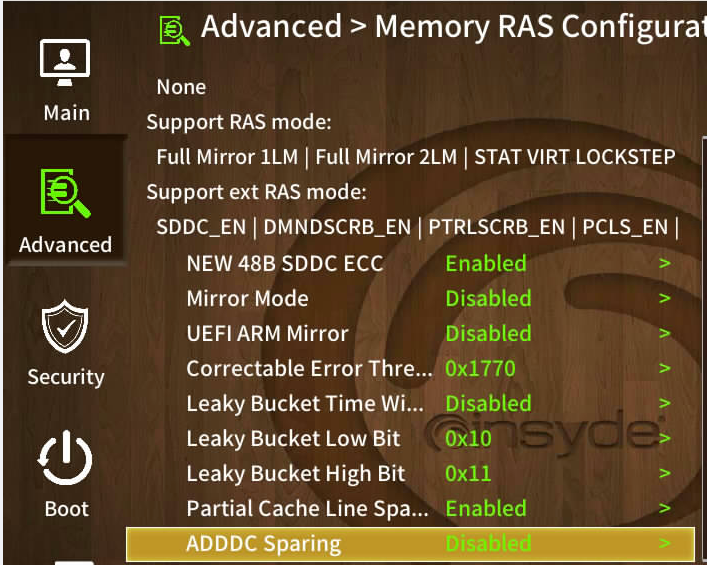

Before deploying Kripta Key
Smooth operation of Kripta Key assumes the following:
Users are trustworthy and competent.
Kripta Key is deployed in a physically secure environment.
The following components are set up and ready to use:
SGX-enabled Intel® processors. Additionally, the motherboard and the BIOS must support SGX as well.
A load balancer with TLS passthrough capability.
Red Hat Enterprise Linux (RHEL) 9.2 operating system.
Kripta Key SDK, allowing applications to securely connect to the KK-Cryptoservice instances using mTLS.
NTP enabled on all servers that run Kripta Key modules.
Java cards and dedicated card readers, supplied by Klavis Kripta.
CLIKK connected to the KK-Manager instance using one-way TLS. If CLIKK has not been installed, refer to the CLIKK Installation Guide for installation.
Preparatory steps
Before installing Kripta Key, the following steps must be done:
Prepare servers for KK-Manager, KK-Cryptoservice, and KK-Auditor. These servers require the following:
Not less than 4 GB of RAM installed.
SGX-enabled processor — see: Intel processors supporting the Intel® SGX with Intel® SPS or Intel® ME.
Motherboard that supports SGX.
BIOS that supports SGX, and SGX enabled via BIOS. The following steps show how enabling SGX via BIOS might look like (steps may differ with different BIOSes and different systems — refer to the vendor’s guide document):
Restart the machine.
Enter the BIOS by pressing F9.
Choose Advanced → Intel® Software Guard Extensions.
Set Intel® Software Guard Extensions (SGX) → Intel® SGX Control to Enabled.
Press F12 to save the settings and reboot.
Ensure the operating system is Red Hat Enterprise Linux 9.2.
Additionally, SGX2 support can be checked by following the steps shown in Checking for SGX2 support. The following steps show how to enable SGX2 on xFusion:
Connect to xFusion iBMC web interface. The default iBMC IP address is 192.168.2.100.
Login with administrator credential and select Virtual Terminal.
If the server is not running, then power on the server. Otherwise, reboot the server.
Press Del on your keyboard in Virtual Terminal to enter the BIOS.
Choose Setup Utility.
Do a factory reset before enabling SGX. Go to Advanced → Processor Configuration.
Set ADDDC Sparing to Disabled. Go to Advanced → Socket Configuration → Memory Configuration → Memory RAS Configuration, and then set ADDDC Sparing to Disabled.
Set UMA-Based Clustering to Disabled (AII2AII). Go back to the Advanced menu, and then choose Common RefCode Configuration. Set UMA-Based Clustering to Disabled (AII2AII).
Set Total Memory Encryption (TME) to Enabled. Go back to the Advanced menu, and then choose Socket Configuration → Processor Configuration. Set Total Memory Encryption to Enabled.
Next, set SW Guard Extensions (SGX) to Enabled.
Press F10 to save the settings and reboot.
Afterwards, enter the BIOS configuration and set PRMRR Size to 4GB.
Prepare the KK-Manager, KK-Cryptoservice, and KK-Auditor RPMs.
Note
It is up to the original equipment manufacturer to publish the specs for their products. Please confirm SGX support with the motherboard vendor before purchasing a particular motherboard model.
Important
During installation, the KK-Manager, KK-Cryptoservice, and KK-Auditor binaries require sudo to run correctly.